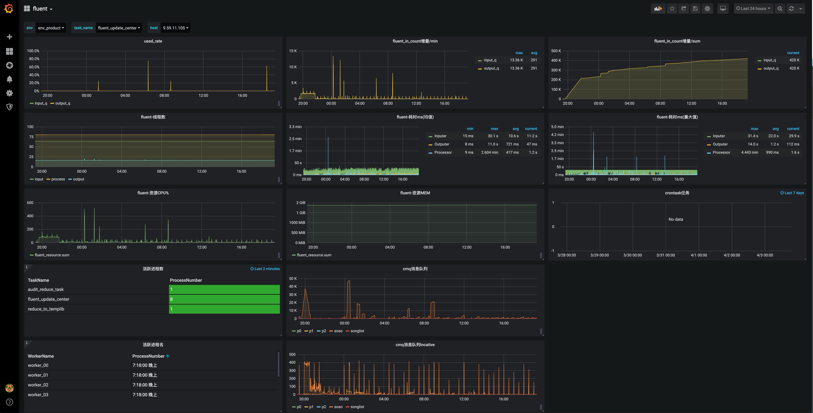

monitor¶
监控项¶
监控队列
- input_q
- output_q
每个队列的监控项
- used_rate: 队列使用长度长度占总长度的壁纸
- in_counter: 队列
put计数 - out_counter: 队列
get计数
监控插件telegraf => influxdb¶
monitor通过telegraf将监控指标写入influxdb
monitor写入influxdb的数据格式
json_body = [
{
"measurement": measurement,
"tags": {
"task_name": "test",
"name": "input_q",
},
"time": "2019-10-10T23:00:00Z",
"fields": {
"used_rate": 0.1,
"": ""
},
}
]
在influxdb中的存储格式
> select * from jobs limit 10;
name: jobs
time in_counter job name out_counter used_rate
---- ---------- --- ---- ----------- ---------
1570627595284236032 120 test input_q 120 0
1570627595284264960 120 test output_q 119 0.2
1570627596291826944 224 test input_q 223 0.2
1570627596291835904 223 test output_q 223 0
1570627597297064192 343 test input_q 343 0
1570627597297089024 343 test output_q 339 0.8
1570627598301306112 460 test input_q 459 0.2
小技巧
| caption: | influxdb相关文档 |
|---|
更多influx相关使用请参考文档
- 如何添加监控: <https://docs.google.com/document/d/1TKdb3KCNcTQqCvTrw29Q425A8yiqCqVdFxlEsXMY01Q/edit>
- influxdb: <https://docs.influxdata.com/>
- influxdb-python: <https://github.com/influxdata/influxdb-python>
grafana¶
利用grafana展示数据效果
